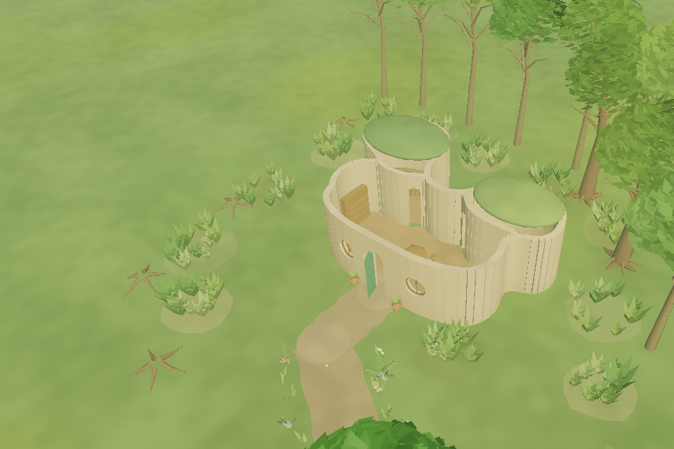
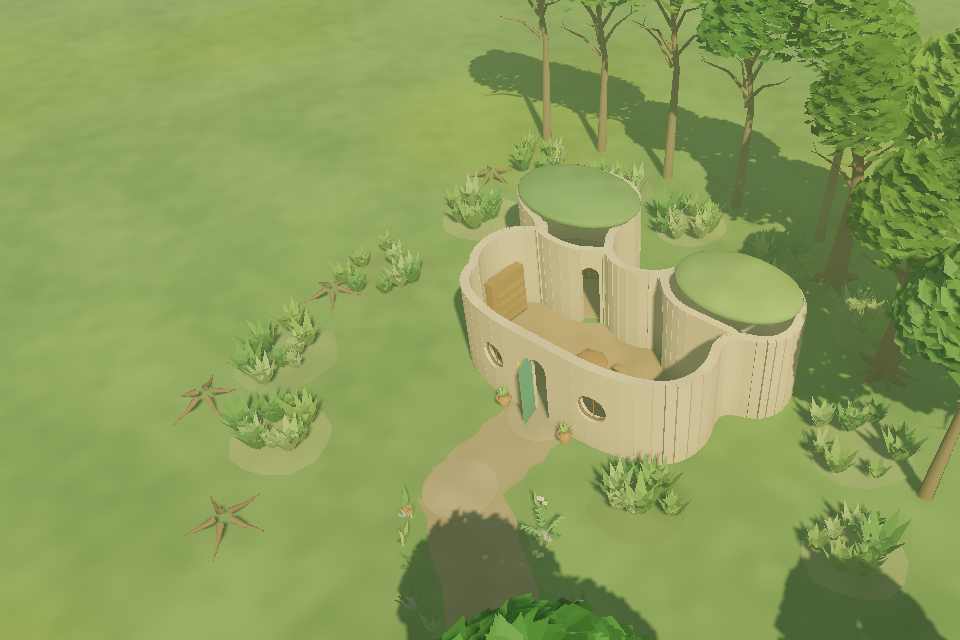

Actual GPU readbacks at matching camera, 960×640 viewport, DPR 1, Chrome 157 and SwiftShader. Reduced motion fixes the animation pose; each capture waits for tree fading to settle.


This is a camera/hardware-matched visual comparison, not a quality-normalized performance benchmark. Geometry and foliage detail are unchanged here. The intended difference is the shadow pass, not a frame-rate benchmark. Pixel differences are not a photorealism score.
The new pass improves grounding and depth. Hard shadow edges, flat terrain, coarse ground plants, bark/leaf material detail and the sparse eye-level distance still need work. It is an incremental result, not atlas/book equivalence. Passing geometry tests alone did not establish this result: the shadow fit, actual GPU pixels and the software fallback were checked separately.
Exact versions, camera hash, artifact hashes and hardware · Atlas height/placement study · Open the forest